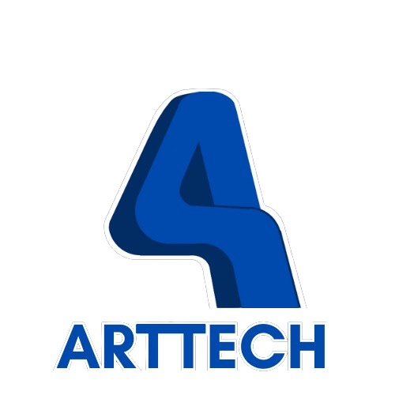

Nossa empresa é especializada no desenvolvimento e manufatura de máquinas e ferramentas de alta qualidade, projetadas para aumentar a eficiência e a produtividade de sua operação. Utilizamos tecnologia de ponta e inovação contínua para criar soluções que atendem às necessidades específicas de cada cliente.
Nosso compromisso com a qualidade garante que cada produto seja fabricado com os mais altos padrões, utilizando materiais duráveis e processos rigorosos. Além disso, oferecemos um atendimento personalizado e suporte técnico para assegurar o sucesso de nossos clientes em todos os momentos.
Se você busca soluções eficientes e personalizadas para suas operações, entre em contato conosco. Nossa equipe está pronta para ajudar sua empresa a alcançar novos níveis de desempenho com nossas máquinas e ferramentas avançadas.